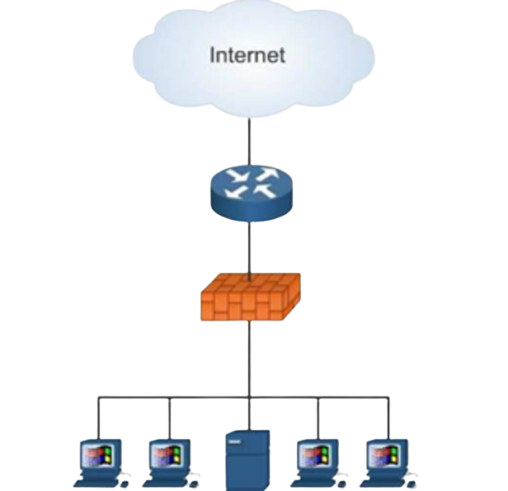

Seguridad en una red: Redes Perimetrales
La seguridad perimetral es uno de los métodos posibles de defensa de una red, basado en el establecimiento de recursos de segurización en el perímetro externo de la red y a diferentes niveles. Esto nos permite definir niveles de confianza, permitiendo el acceso de determinados usuarios internos o externos a determinados servicios, y denegando cualquier tipo de acceso a otros. En palabras más simples, es un mecanismo que permite aceptar o bloquear datos procedentes o destinados a un ordenador concreto ubicado fuera de la red local.

Figura 1. Infraestructura típica